워드프로세서-(구-1급) (2010-03-07 기출문제)
1과목: 워드프로세싱 일반
1. 다음 전자출판 용어 중 이미지 변형 작업으로 채도, 조명도, 명암 등을 조절해 주는 기능을 무엇이라고 하는가?
- 트래킹(Tracking)
- 프레임(Frame)
- 초크(Choke)
- 엠보스(Emboss)
(정답률: 77%)

2. 다음 중 그림을 밝고 명암 대비가 작은 그림으로 바꾸는 것으로 기관의 로고 등을 작성하여 배경을 희미하게 나타낼 때 사용하는 것을 무엇이라 하는가?
- 워터마크(Watermark)
- 스프레드(Spread)
- 리터칭(Retouching)
- 하프톤(Harftone)
(정답률: 74%)
3. 다음은 어느 용어에 대한 설명인가?
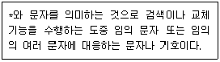
- 와일드 카드(Wild Card)
- 조판 부호(Control Code)
- 아스키 코드(ASCII Code)
- 유니코드(Unicode)
(정답률: 57%)
4. 다음 중 공문서에 대한 설명으로 옳지 않은 것은?
- 지시 문서에서는 훈령, 지시, 예규, 일일 명령등이 있다.
- 기안문 또는 시행문의 결문에는 행정 기관명, 생산 등록 번호, 접수 등록 번호 등이 있다.
- 전자 문서 상의 서명에는 전자 문자 서명, 전자 이미지 서명, 행정 전자 서명 등이 있다.
- 조례, 규칙은 법규 문서이다.
(정답률: 50%)
5. 다음 중 부서별 소관 업무에 대한 업무계획, 관리 업무 현황, 기타 참고 자료 등을 체계적으로 정리하여 활용하는 업무 현황철 또는 업무 참고철을 무엇이라고 하는가?
- 직무편람
- 기구편람
- 행정편람
- 업무배분 편람
(정답률: 62%)
6. 다음 중 기억장치에 대한 설명으로 옳지 않은 것은?
- EEPROM은 전원이 공급되지 않아도 내용이 지워지지 않은 비휘발성 메모리로 주기억 장치와 CPU 사이의 처리 속도 차이를 보완하여 처리 속도를 향상 시켜 주는 고속 버퍼 메모리로 사용된다.
- 레지스터(Register)는 CPU에서 자료 이동을 위해 사용되는 일시적인 기억 장치로 기억 장치 중 속도가 가장 빠르다.
- 가상 메모리(Vitrual Memory)는 보조기억 장치의 일부를 주기억 장치처럼 사용할 수 있도록 하는 기법으로 하드 디스크를 가장 많이 사용한다.
- RAM은 휘발성 메모리로 보통 SRAM과 DRAM이 있으며, 주기적인 재충전이 필요한 것은 DRAM 이다.
(정답률: 50%)
7. 다음 중 공문서의 작성 방법에 대한 설명으로 틀린 것은?
- 문건 별 면 표시는 중앙 하단에 표시하고, 문서철 별 면 표시는 우측 하단에 표시한다.
- 문서를 수정할 경우에는 원안의 글자를 알 수 있도록 당해 글자의 중앙에 가로로 두선을 그어 수정하고, 수정한자가 그 곳을 서명 또는 날인한다.
- 시행문을 정정한 때에는 문서의 여백에 정정한 글자 수를 표기하고 정정한 자가 그 곳에 서명 또는 날인한다.
- 금액을 표기할 경우에는 아라비아 숫자를 사용하되, 숫자 다음의 괄호 안에 한글로 기재한다.
(정답률: 41%)
8. 다음 그림에서 음영 처리된 영역의 명칭으로 알맞은 것은?
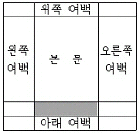
- 제본
- 머리말
- 미주
- 꼬리말
(정답률: 67%)
9. 다음 중 메일머지(Mail Merge) 기능에 대한 설명으로 옳지 않은 것은?
- 이름이나 직책, 주소 등만 다르고 나머지 내용은 같은 이름통의 편지를 쉽게 만들 수 있는 기능이다.
- 초청장이나 안내장, 청접장 등을 만들 경우에 효과적으로 이용할 수 있다.
- 데이터 파일은 엑셀(xls)이나 엑세스(mdb) 파일이어야 한다.
- 반드시 본문 파일에서 메일머지 기능을 실행시켜야 한다.
(정답률: 60%)
10. 다음 중 전자출판에 사용되는 용어에 대한 설명으로 옳지 않은 것은?
- 디더링(Dithering) : 기존의 그림을 다른 형태로 새롭게 변형, 수정하는 작업을 의미한다.
- 오버프린트(Over Print) : 대상체의 컬러가 배경색의 컬러보다 짙을 때에 겹쳐서 인쇄하는 방법이다.
- 필터링(Filtering) : 작성된 그림을 필터 기능을 이용하여 여러 가지 형태의 새로운 이미지로 바꾸어 주는 기능이다.
- 클립아트(Clip Art) : 작업문서에 자주 사용되는 다양한 그림을 모아 둔 작은 그림의 모음집이다.
(정답률: 61%)
11. 다음 중 한글코드에 대한 설명으로 옳지 않은 것은?
- KS X 1001 완성형 한글코드는 한글 2350자, 한자 4888자, 특수문자 1128자 등을 표현할 수 있다.
- KS X 1001 조합형 한글코드는 정보 교환 시 제어문자와 충돌하지 않아 정보 교환용으로 주로 사용한다.
- KS X 10⑤-1 한글코드는 완성형을 토대로 조합형의 장점을 수용한 코드로 영문과 한글 모두를 2바이트로 표현한다.
- KS X 1001 조합형 한글코드는 한글 11172자를 표현할 수 있다.
(정답률: 50%)
12. 다음 중 이동과 복사에 대한 설명으로 옳지 않은 것은?
- 복사를 위해 영역지정을 하지만 잘라내기(오려두기)는 영역지정이 필요 없다.
- 복사와 이동은 붙여넣기 기능을 이용한다.
- 이동과 복사를 위해 클립보드라는 임시저장장소를 사용한다.
- 복사는 문서의 크기를 변화시킬 수 있다.
(정답률: 60%)
13. 다음 중 저장기능에 대하여 설명한 것으로 옳지 않은 것은?
- 주기억 장치인 RAM에 기억되어 있던 문서를 보조기억 장치로 옮기는 것을 말한다.
- 워드프로세서에서는 여러 가지 다른 형태의 파일로 저장 할 수 있다.
- 작업 중인 워드프로세서 문서를 작성한 그대로 텍스트 파일로 저장할 수 있다.
- 일반적으로 확장한 TXT로 저장된 문서는 메모장이나 워드패드에서 편집이 가능하다.
(정답률: 32%)
14. 다음 중 워드프로세서의 편집기능에 대한 설명으로 옳지 않은 것은?
- 사전기능은 단어를 입력하여 주면 의미를 확인할 수 있게 해준다.
- 스타일(Style)은 문서에 복잡한 수식을 입력할 때 사용하는 기능이다.
- 다단 편집이란 하나의 편집 화면을 여러 개의 단으로 나누어서 문서를 작성하는 기능이다.
- 매크로(Macro)는 사용자가 키보드나 마우스로 작업한 순서를 보관해 두었다가 한꺼번에 재실행하는 기능이다.
(정답률: 66%)
15. 다음 중 워드프로세서의 기능에 대한 설명으로 옳은 것은?
- 스풀링(Spooling)은 하나의 문서를 인쇄할 때 인쇄 속도를 훨씬 더 향상시키기 위해 사용하는 기능이다.
- 줄의 끝에 있는 영어 단어가 다음 줄까지 연결될 때 단어를 자르지 않고 단어를 다음 줄의 처음으로 옮겨주는 기능을 센터링(Centering)이라고 한다.
- 정렬(Sort) 기능을 이용하여 ‘가, 나, 다, 라, ...’순으로 정렬하는 것을 오름차순 정렬이라고 한다.
- 네트워크를 이용하여 필요한 문서를 상대방에게 분배, 전송하는 기능을 문서 병합 기능이라고 한다.
(정답률: 56%)
16. 다음 중 워드프로세서의 인쇄기능에 대한 설명으로 옳지 않은 것은?
- 기본 프린터의 드라이버는 새로 등록할 수 있으며 수정 할 수 있다.
- 팩스 모뎀을 설치하면, 상대방의 팩시밀리로 모사전송을 할 수 있다.
- 문자의 크기를 나타내는 단위를 픽셀(Pixel)이며, 전각문자는 가로 폭과 세로 높이의 비율이 1:2 이다.
- 낱장 인쇄용지의 A판과 B판의 가로: 세로 비율이 1: 루트 2 이다.
(정답률: 64%)
17. 다음 중 워드프로세서의 검색과 치환에 대한 설명으로 옳지 않은 것은?
- 영문자의 대소문자를 구분하여 검색할 수 있다.
- 검색을 하면 작업 후에 문서의 분량에는 변화가 없다.
- 한글, 영문자, 한자, 특수문자에 대해서는 치환이 가능하며 치환 시 크기, 속성, 글꼴을 변경할 수 있다.
- 특정한 영역에 속한 그림이나 도형을 다른 그림이나 도형으로 치환할 수 있다.
(정답률: 48%)
18. 다음 중 목차(차례) 만들기에 대한 설명으로 옳지 않은 것은?
- 목차 만들기의 결과는 꼬리말 영역에 자동으로 만들어진다.
- 제목 목차뿐만 아니라 표 목차, 그림 목차의 구성도 가능하다.
- 주로 문서의 분량이 많을 때 활용되며, 현재 문서의 삽입된 모든 수식에 대하여도 목차 만들기를 할 수 있다.
- 목차를 만들기 위해서는 목차에 포함될 항목을 표시해두어야 한다.
(정답률: 59%)
19. 다음과 같은 문장이 수정되었을 때 사용된 교정부호를 올바르게 짝지어진 것은?
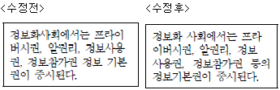
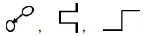
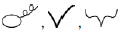
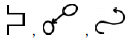
(정답률: 75%)
20. 다음 중 문서의 분량에 변동이 없는 교정 기호로만 짝지은 것은?
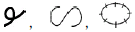
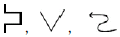
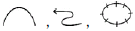
(정답률: 69%)
2과목: PC 운영 체제
21. 다음 중 한글 Windows XP에서 마우스 끌어놓기(Drag &Drop) 기능을 이용한 파일의 이동 작업에 관한 설명으로 옳은 것은?
- 실행 파일을 다른 드라이브에 있는 폴더에 마우스로 끌어놓기를 하면 파일의 이동이 수행된다.
- 실행 파일을 같은 드라이브에 있는 폴더에 <Ctrl>키를 누른 상태로 마우스로 끌어놓기를 하면 파일의 이동이 수행된다.
- 비실행 파일을 같은 드라이브에 있는 폴더에 <Shift>키를 누른 상태로 마우스로 끌어놓기를 하면 파일의 이동이 수행된다.
- 비실행 파일을 플로피 디스크에 있는 폴더에 마우스로 끌어놓기를 하면 파일의 이동이 수행된다.
(정답률: 40%)
22. 다음 중 한글 Windows XP의 [제어판]에 있는 [사운드 및 오디오 장치]의 등록정보 창을 이용하여 설정할 수 있는 내용으로 옳지 않은 것은?
- 시스템 신호음을 시각적으로 표시하기 위한 소리 탐지 기능을 설정할 수 있다.
- Windows 및 프로그램의 이벤트에 적용되는 소리의 집합인 소리 구성표를 설정할 수 있다.
- 사운드 및 오디오 장치에 대한 드라이버의 업데이트를 할 수 있다.
- 사용자가 선택한 음성 재생 또는 녹음 장치에 대한 볼륨 및 고급 옵션을 제어할 수 있다.
(정답률: 37%)
23. 다음 중 한글 Windows XP에 새로운 [글꼴]을 설치하는 방법으로 옳은 것은?
- [제어판]의 [프로그램 추가/제거]를 이용하여 폰트를 설치한다.
- ‘C:\Windows\Fonts'폴더에 해당 글꼴 파일을 복사하면 설치 된다.
- 글꼴 파일마다 제공된 Install.exe나 Setup.exe 프로그램을 이용해야 설치된다.
- 새로운 글꼴을 [글꼴 정리 마법사]에 의해 설치할 수 있다.
(정답률: 50%)
24. 다음 중 한글 Windows XP에서 [Windows 탐색기] 창의 왼쪽에 있는 탐색창에 대한 설명으로 옳지 않은 것은?
- 폴더명이 ‘M'으로 시작하는 폴더가 하나만 있는 경우에 ’M'키를 누르면 해당 폴더가 선택된다.
- 숫자 키패드의 ‘+’ 키를 누르면 선택된 폴더의 최하위 까지의 모든 하위 폴더를 항상 표시해 준다.
- 왼쪽 방향키(←)를 누르면 선택된 폴더가 열려 있을 때는 닫고, 닫혀 있으면 상위 폴더가 선택된다.
- [Back Space] 키를 누르면 상위 폴더가 선택 된다.
(정답률: 44%)
25. 다음 중 한글 Windows XP에서 바탕화면에 있는 바로가기 아이콘에 대한 설명으로 옳지 않은 것은?
- 바로가기 아이콘의 확장자는 LNK이다.
- 바로가기 아이콘은 파일이나 폴더 뿐만 아니라 네트워크상의 다른 컴퓨터에 대해서도 작성할 수 있다.
- 해당 바로가기 아이콘의 등록정보를 이용하여 원본을 다른 개체로 변경할 수 있다.
- 동일한 원본 파일이나 폴더에 대한 바로가기 아이콘은 모두 동일한 이름을 가져야 한다.
(정답률: 57%)
26. 다음 중 한글 Windows XP에서 연결 프로그램에 관한 설명으로 옳지 않은 것은?
- 임의의 폴더에 있는 문서 파일에 대해 연결 프로그램을 지정하면 시스템이 시작될 때마다 자동으로 해당 연결 프로그램이 실행된다.
- 연결 프로그램이 지정되어 있지 않은 파일은 사용자가 지정할 수 있다.
- 서로 다른 확장자를 갖는 파일들은 같은 연결 프로그램으로 지정할 수 있다.
- 연결 프로그램은 사용자가 임의로 변경할 수 있다.
(정답률: 31%)
27. 다음 중 한글 Windows XP에서 시작 메뉴의 [로그오프]의 기능에 관한 설명으로 옳은 것은?
- 네트워크 연결은 그대로 유지하며 프로그램은 모두 종료한다.
- 다른 사용자가 컴퓨터를 사용할 수 있도록 다시 부팅시킨다.
- Windows를 다시 시작하지 않고 응용 프로그램과 네트워크의 로그온만 종료된다.
- 네트워크로 연결된 컴퓨터에서 현재 사용자의 시스템을 종료한다.
(정답률: 48%)
28. 다음 중 한글 Windows XP에서 [시작] 메뉴에 표시할 수 있는 [내 최근 문서] 메뉴 항목에 대한 설명으로 옳지 않은 것은?
- [내 최근 문서] 메뉴를 선택하면 최근에 작업했던 문서, 그림 등의 데이터 파일들의 목록을 표시한다.
- 사용자 계정이 'wp'일 경우에 등록된 문서 목록은 ‘C:\Document and Settings\wp\내 최근 문서’ 폴더에 저장되어 있다.
- 최대 15개까지 등록이 가능하며 새로운 문서가 등록되면 가장 오래된 문서가 없어진다.
- [내 최근 문서] 메뉴에 있는 문서를 삭제하면 휴지통으로 이동한다.
(정답률: 38%)
29. 다음 중 한글 Windows XP에서 [제어판]에 있는 [프로그램 추가/제거] 프로그램에 관한 설명으로 옳지 않은 것은?
- 컴퓨터의 프로그램과 구성 요소를 관리하도록 도와주면, CD_ROM, 플로피 디스크, 네트워크에서 Microsoft Excel 또는 Word와 같은 프로그램을 추가할 수 있다.
- 인터넷을 통해 Microsoft 업데이트 및 새로운 기능을 추가 할 수 있다.
- 네트워킹 서비스와 같이 기본 설치에서 제외한 Windows 구성 요소를 추가하거나 제거하도록 도와준다.
- Windows용 프로그램의 경우와 동일하게 MS-DOS용 프로그램을 추가하거나 제거하려고 할 경우에도 사용된다.
(정답률: 38%)
30. 다음 중 한글 Windows XP에서 [휴지통]에 있는 내용을 복원하는 방법으로 옳지 않은 것은?
- [휴지통]에서 해당 위치로 드래그하여 복원할 수 있다.
- [휴지통]에 있는 해당 파일의 바로가기 메뉴에서 [복사]를 선택한 후에 다른 폴더에서 [붙여넣기]를 하면 복원할 수 있다.
- [휴지통]에 있는 해당 프로그램의 바로가기 메뉴에서 [복원] 메뉴를 선택하면 복원할 수 있다.
- 바로 이전에 [휴지통]으로 삭제한 파일은 [Ctrl]+[Z] 키를 이용하여 복원할 수 있다.
(정답률: 47%)
31. 다음 중 한글 Windows XP에서 폴더 창에 있는 모든 폴더 파일이나 폴더를 선택하는 방법으로 옳은 것은?
- 해당 폴더 창에서 <Ctrl>+<T>키를 누른다.
- 해당 폴더 창의 비어있는 공간의 바로가기 메뉴에서 [전체 선택] 메뉴를 클릭한다.
- 해당 폴더의 맨 앞에 있는 파일이나 폴더를 선택한 후에 <Ctrl>키를 누른 상태로 맨 마지막 파일이나 폴더를 선택한다.
- 해당 폴더 창에서 [편집] 주메뉴의[모두 선택] 메뉴를 선택한다.
(정답률: 37%)
32. 다음 중 한글 Windows XP의 [검색 결과] 창에서 파일이나 폴더를 검색하기 위하여 사용 가능한 조건으로 옳지 않은 것은?
- C:\Temp 폴더에 있는 모든 파일 중에서 2002년 1월 20일 이후에 생성된 파일
- C:\Temp 폴더에 있는 모든 파일 중에서 파일 크기가 100KB 보다 큰 파일
- C:\Temp 폴더에 있는 파일 중에서 “windows"라는 문자열을 내용에 포함하고 있는 실행형 파일(*.exe 또는 *.com)
- C:\Temp 폴더에 있는 모든 파일 중에서 어제 날짜 이후에 생성된 파일
(정답률: 38%)
33. 다음 중 한글 Windows XP에서 네트워크를 이용한 공유 프린터를 설치하거나 사용하는 방법에 관한 설명으로 옳지 않은 것은?
- 네트워크 환경에서 해당 프린터를 찾아 더블클릭하면 프린터의 관리 창이 표시된다.
- [프린터 추가 마법사]를 이용하여 네트워크 상에서 공유되어 있는 프린터를 찾아 설치한다.
- 공유된 프린터는 자동으로 기본 프린터로 설정된다.
- 공유 프린터의 [속성] 창에서 [테스트 페이지 인쇄]를 선택 하면 프린터 설치가 제대로 되어 있는지 확인할 수 있다.
(정답률: 59%)
34. 다음 중 한글 Winodws XP의 문서 편집기인 [메모장] 프로그램에 관한 설명으로 옳은 것은?
- 서식있는 텍스트 파일을 작성할 수 있으며, 기본 저장 파일은 ‘.doc' 이다.
- OLE 개체 삽입 그림이나 차트 등의 고급기능을 사용할 수 있다.
- 찾기 기능을 사용하여 문장 내에서 원하는 문자열을 찾을 수 있다.
- 특정 영역을 지정하여 일부 문자열의 글꼴과 전경색을 변경할 수 있다.
(정답률: 39%)
35. 다음 중 한글 Winodws XP에서 [보조프로그램]의 [엔터테이먼트]에 있는 [녹음기] 프로그램에 관한 설명으로 옳지 않은 것은?
- 녹음한 사운드를 반대 방향으로 재생할 수 있다.
- *.mp3 형식 파일을 불러오기하여 편집한 후에 *.wav 형식의 파일로 저장할 수 있다.
- 녹음된 소리를 재생하는 현재 위치에서 앞부분이나 뒷부분을 삭제할 수 있다.
- 녹음된 소리 파일의 삽입이나 병합을 할 수 있다.
(정답률: 41%)
36. 다음 중 한글 Winodws XP에서 응용 프로그램이 실행되고 있는 도중에 디스크 검사 옵션을 선택한 후 [디스크 검사] 프로그램의 실행을 시도하였을 경우의 결과로 옳은 것은?
- 실행 중인 응용 프로그램이 완전히 종료하고 난 후에 [디스크 검사] 프로그램이 자동으로 수행된다.
- 실행 중인 응용 프로그램이 일시 중지되고 [디스크 검사] 프로그램이 수행된다.
- 실행 중인 응용 프로그램과 병행하여 [디스크 검사] 프로그램이 동시에 수행된다.
- [디스크 검사] 프로그램의 수행이 불가능하여 시스템을 다음에 다시 시작할 때 [디스크 검사]를 할 것인지를 표시하는 메시지 상자가 나타난다.
(정답률: 30%)
37. 다음 중 한글 Windows XP에서 발생할 수 있는 문제의 해결 방법으로 옳지 않은 것은?
- 하드웨어가 충돌하는 문제가 발생하면 [장치 관리자] 창에서 노란색 원 안에 느낌표가 표시 되는 문제의 하드웨어를 찾아 설정을 변경하거나 제거 한다.
- 메인 메모리와 관련된 문제가 발생하면 시스템을 재시작하여 메모리를 원상태로 돌려놓고 프로그램을 다시 시작한다.
- 디스크의 공간이 부족한 경우에는 [디스크 정리]를 이용하여 불필요한 파일을 제거 한다.
- 네트워크와 관련된 문제가 발생하면 네트워크 환경의 공유 설정을 모두 취소한다.
(정답률: 48%)
38. 다음 중 한글 Windows XP에서 네트워크 사용을 위한 [로컬 영역 연결]에 관한 설명으로 옳지 않은 것은?
- 홈 네트워크 또는 소규모 네트워크를 구축하면 Windows를 실행하는 컴퓨터는 LAN에 연결 된다.
- 네트워크 어댑터를 설치하면 Windows는 어댑터를 발견하고 로컬 영역 연결을 만든다.
- 다른 모든 연결 형식과 같은 로컬 영역 연결도 네트워크 연결 폴더에 나타나며 기본적으로 로컬 영역 연결은 항상 활성화 된다.
- 로컬 영역 연결은 수동으로 구축되고, 여러개의 활성화 되는 연결 유형의 하나이다.
(정답률: 42%)
39. 다음 중 한글 Winodws XP에서 인터넷을 사용하기 위하여 [인터넷 프로토콜(TCP/IP) 등록정보] 창에서 설정해야 하는 항목에 관한 설명으로 옳지 않은 것은?
- 서브넷 마스크 : IP 주소의 네트워크 ID 부분과 호스트 ID 부분을 구별하기 위하여 IP 패킷 수신자에게 허용하는 32비트의 값이다.
- DNS 서버 : 인터넷을 사용하는 경우에 홈페이지를 제공하는 컴퓨터의 32비트 주소이다.
- 게이트웨이 : TCP/IP 네트워크 사이에서 IP 패킷을 라우팅하거나 전달할 수 있는 여러개의 실제 TCP/IP 네트워크에 연결된 장치이다.
- IP 주소 : 인터넷을 사용하는 네트워크에서 노드를 식별하는데 사용하는 32비트 주소이다.
(정답률: 36%)
40. 다음 중 한글 Winodws XP에서 공유 문서 폴더에 관한 설명으로 옳지 않은 것은?
- 공유 문서 폴더는 개인 폴더인 내 문서, 내 그림 및 내 음악 폴더에 대응하는 폴더이다.
- 공유 문서, 공유 그림 및 공유 음악 폴더는 사용자 컴퓨터의 모든 사람이 엑세스할 수 있는 파일, 그림 및 음악을 저장하는 장소를 제공한다.
- 네트워크에 연결된 사용자가 공유 문서 폴더를 개인 폴더와 같이 개인용으로 사용할 수 있다.
- 공유 문서 폴더의 내용은 사용자 컴퓨터를 사용하는 모든 사람이 언제든지 사용할 수 있다.
(정답률: 43%)
3과목: 컴퓨터 및 정보활용
41. 다음 중 다른 사람의 컴퓨터에 잠입해 개인신상정보 등과 같은 타인의 정보를 사용자 모르게 수집하는 프로그램을 무엇이라고 하는가?
- 백도어(Back Door)
- 드롭퍼(Dropper)
- 훅스(Hoax)
- 스파이웨어(Spyware)
(정답률: 63%)
42. 다음중 DMA(Direct Memory Access)에 관한 설명으로 옳은 것은?
- CPU의 계속적인 개입 없이 메모리와 입출력장치 사이에 데이터를 전송하는 방식
- 고속의 CPU와 저속의 주기억장치 사이에서 일시적으로 데이터를 저장하는 고속 기억장치이다.
- CPU 내부에서 데이터를 전달하는 기능을 가진 병렬신호 회선을 의미한다.
- 기억 용량은 작으나 속도가 아주 빠른 버퍼 메모리이다.
(정답률: 41%)
43. 다음에서 설명하는 장치로 알맞은 것은?
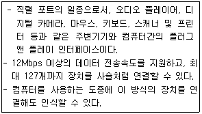
- AGP
- USB
- SCSI
- IEEE-1394
(정답률: 62%)
44. 다음 중 DRAM(Dynamic RAM)의 특성으로 맞는 것은?
- SRAM에 비해 대용량이다.
- 주로 캐시 메모리로 사용된다.
- SRAM에 비해 고속이다.
- SRAM에 비해 비트당 가격이 비싸다.
(정답률: 41%)
45. 아날로그 데이터 신호의 진폭을 비트(bit) 단위로 샘플링하여 디지털 신호로 변환하는 방법으로 옳은 것은?
- PAM
- PCM
- PDM
- PTM
(정답률: 43%)
46. 실제 장면을 촬영한 후, 화면에서 등장하는 캐릭터나 물체의 윤곽선을 추적하여 애니메이션의 기본형을 만들고, 여기에 수작업으로 컬러를 입히거나 형태를 변형시켜 사용하는 애니메이션 기법을 무엇이라고 하는가?
- 모핑(Morphing)
- 로토스코핑(Rotoscoping)
- 포깅(Fogging)
- 클레이메이션(Claymation)
(정답률: 40%)
47. 다음 중에서 DVD-ROM에 대한 설명으로 옳지 않은 것은?
- 단층 구조인 경우 단면에 4.7GB, 양면에 9.4GB 정도 기록할 수 있다.
- 8개 국어의 음성을 지원 할 수 있다.
- 주로 MPEG-1 방식의 영상 압축 기술을 이용하여 비디오 영상이 기록된다.
- 디스크 한 면에 약 135분의 동영상을 담을 수 있다.
(정답률: 47%)
48. 기존의 파일 시스템에 비해 데이터베이스 시스템이 갖는 장점으로 옳지 않은 것은?
- 데이터의 공유
- 데이터 중복의 최대화
- 데이터의 일관성
- 데이터의 무결성 증대
(정답률: 55%)
49. 다음 중 버스(Bus) 방식 네트워크 시스템에 관한 설명으로 옳지 않은 것은?
- 네트워크 구성에 드는 비용이 비교적 저렴하다.
- 네트워크 구성이 복잡하지 않고 컴퓨터간 접속은 백본을 통해 이루어 진다.
- 네트워크 장애 발생 시 허브와 고장난 컴퓨터 사이의 선로만 점검하면 된다.
- 네트워크에 연결된 컴퓨터들이 동시에 많은 신호를 전송하면 네트워크의 성능이 저하될 수 있다.
(정답률: 48%)
50. 다음 중 마이크로소프트사가 발표한 운영체제로 소형 모바일 컴퓨팅이나 무선 통신 기기, 차세대 멀티미디어 기기 같은 임베디드시스템에 주로 사용되는 운영체제는?
- MS-DOS
- Windows XP
- Windows NT
- Windows CE
(정답률: 30%)
51. 네트워크상에서 물리적인 네트워크 주소(MAC : Media Access Control)를 IP주소로 대응시키기 위해 사용되는 프로토콜은 어느 것인가?
- RARP
- ARP
- SLIP
- SNMP
(정답률: 40%)
52. 다음 보기에서 설명하는 내용에 맞는 것은?
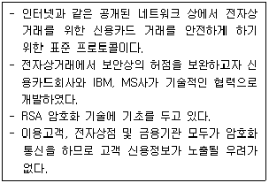
- SSL
- SET
- SSH
- SMTP
(정답률: 36%)
53. 다음 중 암호화 기법인 RSA의 특징에 해당하지 않은 것은?
- 암호키와 복호키 값이 서로 다르다.
- 키의 크기가 작고 알고리즘이 간단하여 경제적이다.
- 적은 수의 키만으로 보안 유지가 가능하다.
- 데이터 통신시 암호키를 전송할 필요가 없고, 메시지 부인 방지 기능이 있다.
(정답률: 29%)
54. 다음 중 MPEG에 대한 설명으로 옳지 않은 것은?
- 손실 기법과 무손실 기법을 수학적으로 구현하여 흑백이나 컬러 이미지를 압축 저장하거나 재생이 가능하다.
- 영상의 중복성을 제거함으로써 압축률을 높일 수 있는 중복 제거 기법을 사용한다.
- 동영상 압축기법에 대한 표준을 제정하는 단체와 표준규격의 이름을 의미한다.
- MPEG-4는 MPEG-2를 개선한 것으로 동영상 데이터 전송이나 전화선을 이용한 화상회의 시스템을 사용하기 위해 개발되었다.
(정답률: 29%)
55. 다음 중 프로그램 내장 방식에 대한 설명으로 옳지 않은 것은?
- 폰 노이만에 의해서 제안되었다.
- 프로그램과 데이터를 주기억장치에서 저장하여 수행한다.
- 서브루팅의 사용이 가능하며 사용 빈도에 제한이 없다.
- UNIVAC은 프로그램 내장방식을 채택한 최초의 컴퓨터이다.
(정답률: 50%)
56. 시스템의 처리 속도를 향상시키기 위해 고려해야 할 사항중 하나가 메모리 업그레이드이다. 다음 중 메모리 업그레이드에 대한 설명으로 옳지 않은 것은?
- 메인보드에 램을 꽂을 자리인 램 뱅크가 있는지 확인한다.
- 램의 형태, 속도, 핀 수, 용량 등을 확인한다.
- 메인 보드에서 지원하는 메모리의 최대 크기를 확인한다.
- 램의 속도 단위인 NS의 수치가 큰 것을 선택한다.
(정답률: 53%)
57. 다음의 설명에서 괄호 안에 들어갈 용어가 순서대로 맞게 짝지어진 것은?
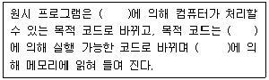
- 인터프리터, 로더, 링커
- 인터프리터, 링커, 로더
- 컴파일러, 링커, 로더
- 컴파일러, 로더, 링커
(정답률: 46%)
58. 다음 중에서 LAN을 매체접근 제어방식으로 분류하였을 경우, 이에 해당되지 않은 것은?
- CSMA/CD
- 토폴로지(Topology)
- 토큰 링(Toker Ring)
- 토큰 버스(Token Bus)
(정답률: 39%)
59. 다음 중 전자수첩을 컴퓨터라고 보았을 때, 그에 대한 이유로 가장 옳은 것은?
- 전자기기이기 때문에 컴퓨터이다.
- 계산기능이 있으므로 컴퓨터이다.
- 액정화면이 있으므로 컴퓨터이다.
- 프로그램을 내장하였기 때문에 컴퓨터이다.
(정답률: 61%)
60. 다음 중 URL의 형식이 바르게 표시된 것은?
- 접근프로토콜://문서이름/IP주소 또는 도메인 이름/문서경로
- 접근프로토콜://IP주소 또는 도메인 이름/문서경로/문서이름
- 접근프로토콜://문서경로/문서이름/IP주소 또는 도메인 이름
- 접근프로토콜://IP주소 또는 도메인 이름/문서이름/문서경로
(정답률: 47%)